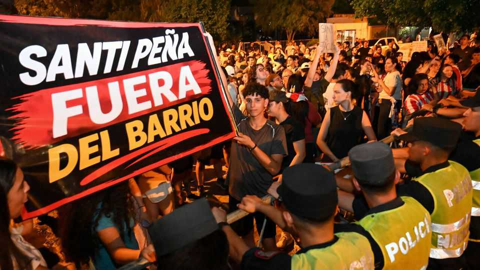
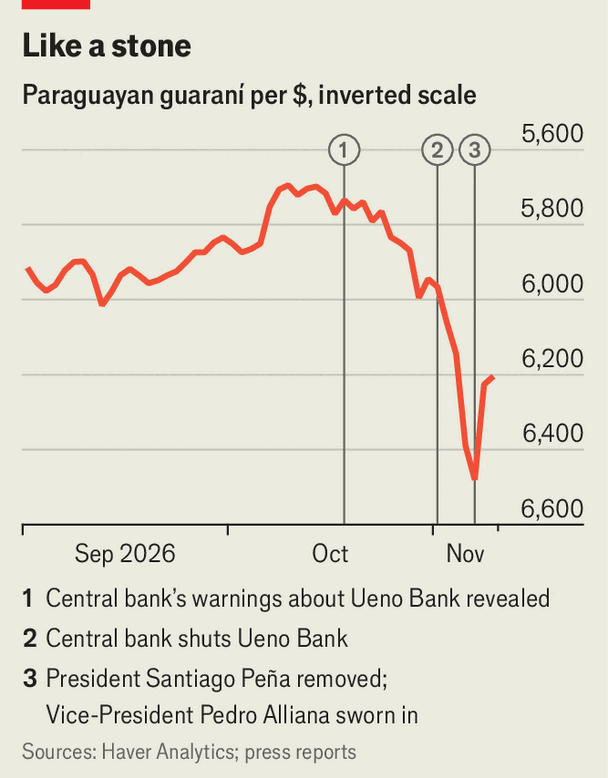

How Paraguay’s digital bank became a massive bomb
The country prospered under President Peña. Then his buddy’s business went bust

Nov 12th 2026
Drones piloted by TV crews whirr over Santiago Peña’s mansion in the hills. Below, investigators debate how to open the former president of Paraguay’s walk-in safe, hidden inside a secret passage. A policeman is asked if reports that they might blow the vault open are true. “No,” he laughs. “People live nearby.” Besides, an explosion could bring an infinity pool that sits above it pouring down.
Paraguay has been in tumult since November 3rd, when regulators seized an upstart bank called Ueno. Three million customers were frozen out of their accounts (Paraguay has about 7m people). Many couldn’t pay for food, fuel or medicine. Some $850m of government money remains stranded. Within days, Mr Peña was impeached and arrested. Investigators say he abused his position to benefit the digital lender. They say Ueno sucked in state funds and disbursed extravagant loans to cronies. Mr Peña denies wrongdoing.

When preparing to take office in 2023, Mr Peña tapped Ueno’s chairman, Carlos Carvallo, to lead Paraguay’s Central Bank (BCP). Mr Peña was friendly with Miguel Vázquez, Ueno’s CEO, who sought to make the bank Paraguay’s first billion-dollar startup. Mr Peña’s asset declarations show Ueno lent him around $315,000; prosecutors say the borrowings were higher than that, and that they were used to build his summer residence (where the vault was found). He held shares in the bank’s holding company until last year. The central bank, under Mr Carvallo’s care, approved Ueno’s speedy expansion.
In July a BCP regulator warned his superiors that Ueno’s finances were dire. They ignored, threatened and removed him. But his memo reached Horacio Cartes, a powerful former president and a businessman whose companies manufacture cement and cigarettes. Mr Cartes is the leader of the ruling, conservative Colorado Party; he was once a mentor to Mr Peña, though the two recently became enemies. Mr Cartes hinted in October that he had dynamite. “Word to the wise,” he smouldered to a camera, before triggering a detonation at his quarry. “Stand clear.”
Both Ueno and Mr Peña’s political career are in smoking ruins. Those arrested alongside Mr Peña include Mr Vázquez, other Ueno executives and Mr Carvallo, who as recently as October was named Central Bank Governor of the Year by LatinFinance, a financial news service. (Most of those arrested deny any wrongdoing or knowledge of Ueno’s activities.) Pedro Alliana, Mr Peña’s anodyne vice-president, was sworn in as Paraguay’s new leader on November 6th. His cabinet is stacked with people loyal to Mr Cartes.
Thanks to a deposit-insurance scheme, over 1.8m people have begun getting their money back (up to a cap of $38,000). That covers the majority of Ueno depositors and has helped calm demonstrations. But the impact on the economy will take time to become clear. Paraguay’s GDP has more than doubled in real terms since the start of the century. But job losses linked to Ueno’s collapse could dent things. And worried people have stopped spending.
Larger depositors are not guaranteed repayment. Ueno held some $520m in state pension funds. Some people aren’t receiving pensions; many fear they won’t get them in the future. “We feel disappointed, disillusioned, offended,” said Karina Fernández, a doctor, at a demonstration outside Congress. “It’s extremely painful.” The collapse will also affect remittances, the country’s third-largest source of foreign exchange (a record $1.35bn in 2025) after beef and soya. Ueno’s banking app made it far easier for the million Paraguayans who work in Argentina, Brazil and Spain to send money home, says Belarmino Balbuena, a rural organiser who travelled 300km to Asunción, the capital, to protest. “This issue affects the whole population.”
Past political scandals in Paraguay have not dulled growth for long. But the harm done to perceptions of the central bank’s independence could weigh on foreign investment, says Fernando Masi of CADEP, a local think-tank. Brazilians have been founding factories and Argentines throwing up towers, driving record foreign direct investment of $1.2bn last year.
In recent years vaccine refuseniks, blockchain enthusiasts and assorted tax-phobics have also flocked to Paraguay. An unprecedented 50,000 people applied for residency in the nine months to September. Political upheaval and blocked bank accounts could cause some liberty-lovers to consider alternative places, such as Bolivia. “Paraguay is seen as a safe haven,” said Travis Miller, an American entrepreneur, on X (where he goes by Bitcoin Capitalist). “It’s like a nuclear bomb going off.”
The scandal is an opportunity for Paraguay’s opposition parties ahead of elections that are due in 2028. Founded in 1887, the Colorado Party has lost only one democratic election, 18 years ago. But having now burned through Mr Peña and Mr Alliana—the heir and the spare—Mr Cartes’s outfit is left with nonentities (Paraguay’s presidents are limited to a single five-year term). Miguel Prieto, a 37-year-old former mayor from a centrist party, is the most popular challenger.
Mr Peña and his ilk are responsible for “eroding everything we built”, says Dionisio Borda, a former finance minister. “It makes me a little sad, and also angry.” He is advising Mr Prieto on how, if elected, he might soothe fizzing discontent with corruption, injustice and poor public services. Before all that goes boom, too. ■